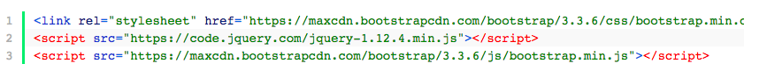
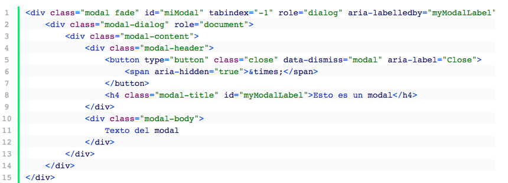
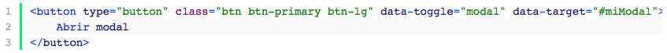

Lo primero que deberemos hacer es obtener las librerías que vamos a usar que son las siguientes:
Para cargar las librerías que acabamos de comentar, tenemos dos opciones:
La primera es que carguemos ambas (o una solamente) directamente desde cada una de sus páginas con el enlace que nos proporcionan. Recuerda que, si se cae alguna de estas páginas, nuestra aplicación dejará de funcionar aunque la probabilidad de que la página de Bootstrap o de jQuery estén caídas es casi remota. Si elegimos esta opción, estas serán las líneas que deberás pegar en tu código:
Esto va en el HTML del Modal:
En primer lugar, vamos a crear el modal en sí. Para que sea más fácil de explicar, dejamos aquí el código y, seguidamente, explicaremos línea a línea:

Línea 1: creamos el contenedor principal con un ID único (en nuestro caso “miModal”). Es importante quedarnos con este ID ya que será el que usemos a la hora de llamar a la función que muestra este contenedor. Es este el contenedor, que comentábamos antes, que tiene el fondo oscuro con cierta opacidad que hace que reste protagonismo al resto de la página.
Linea 2: es el contenedor donde está definido el tamaño del contenedor (por defecto 600px).
Línea 3: se trata de un contenedor donde están asociados estilos tales como fondo del modal, bordes, sombreados, etc.
Línea 4: en esta línea, Bootstrap mete el DIV que contiene el botón de cerrar el modal así como el título del modal en un encabezado (H4).
Línea 10: en el div con clase “modal-body” es donde insertaremos el contenido que queremos que haya en el modal.
Una vez que tenemos el modal creado y, por defecto, oculto, tenemos que elegir la manera de que se muestre al usuario. Para ello, vamos a usar un botón de los que viene predeterminados en la librería de Bootstrap.
Para ello, sólo tendremos que insertar el siguiente código donde queremos que aparezca dicho botón:
Como vemos, el atributo “data-target” es el encargado de contener el identificador del DIV del modal: miModal. Si cambiáramos uno u otro dejarían de funcionar. Tienen que tener el mismo ID obligatoriamente.